還沒接進遊戲。四個方向：朝下、朝右、朝上、朝左。劍一律在右手：朝左時右手在遠側，握劍的手被身體擋住，靠鏡頭的左手是空的（不是朝右的鏡像）。劍上的火焰、符文發光之後由程式畫，這裡沒有。
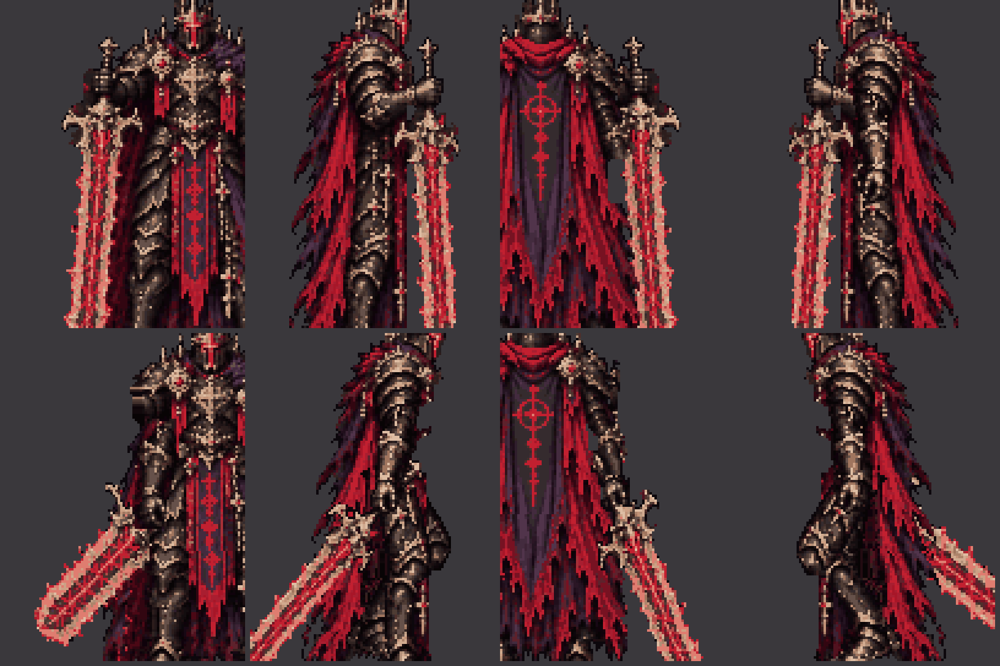
站著 → 起步（劍放倒拖在身後、身體前傾）→ 走 → 停步（收腳、站直、把劍拉回來立好）→ 站著。地面只在 Boss 真的在移動時才動，地上的記號每 40px 一條（一步）。
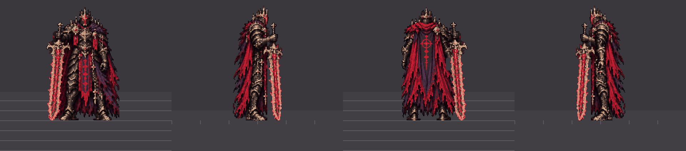
朝下、朝右、朝上和上次一樣；朝左重畫了（劍在遠側的手）。
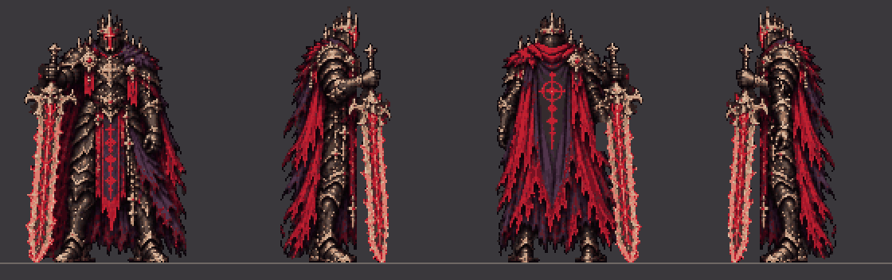
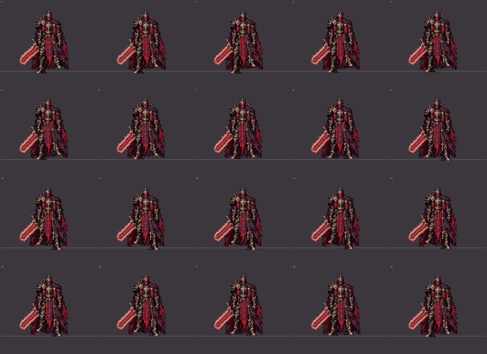
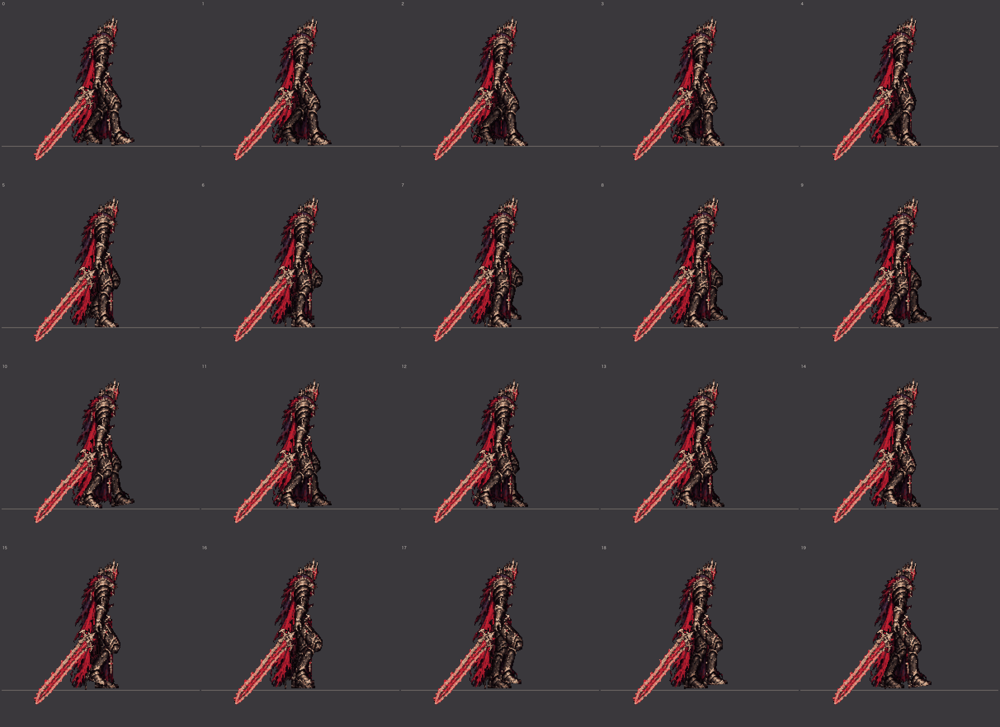
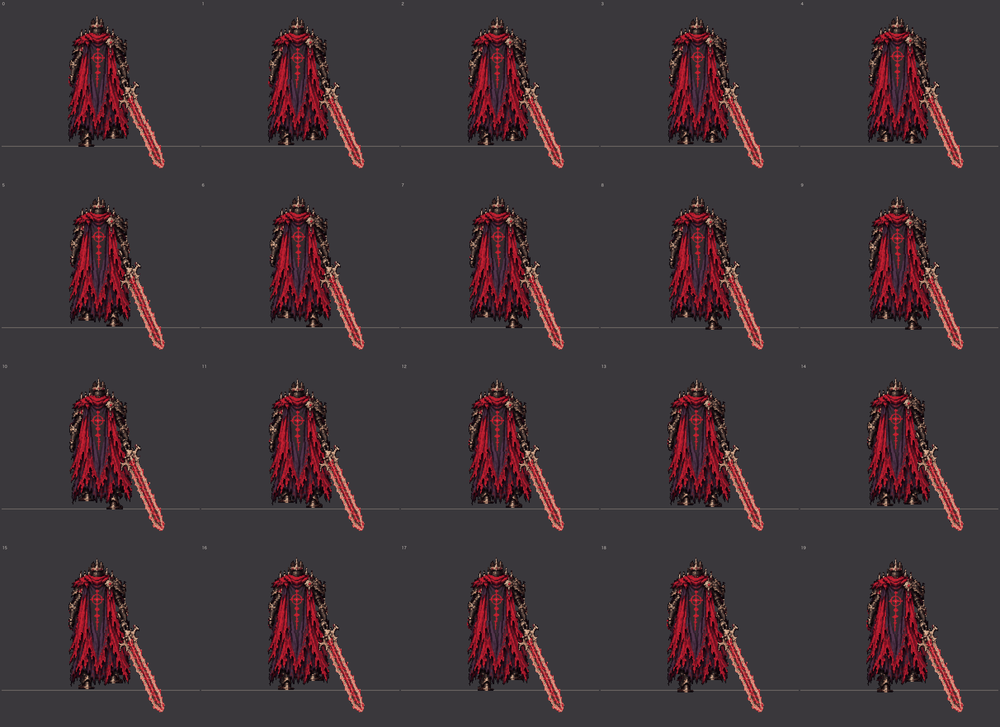
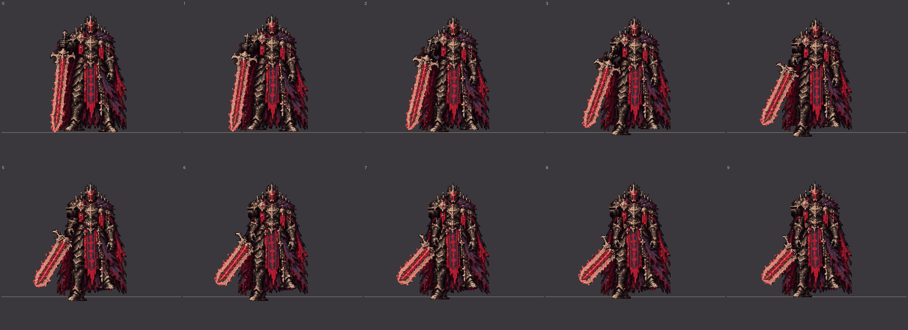
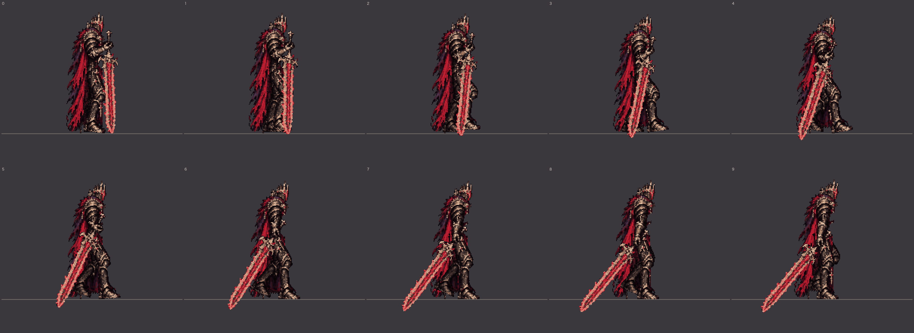
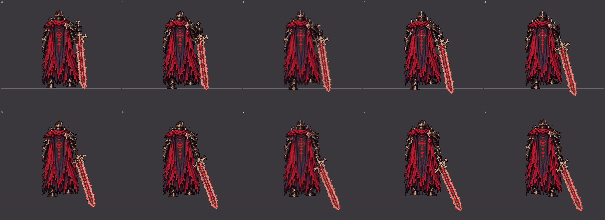
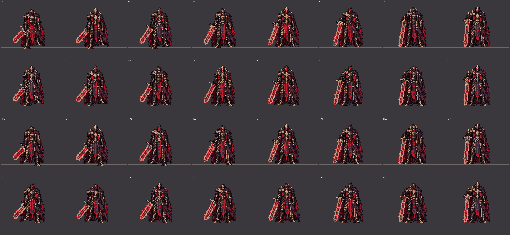
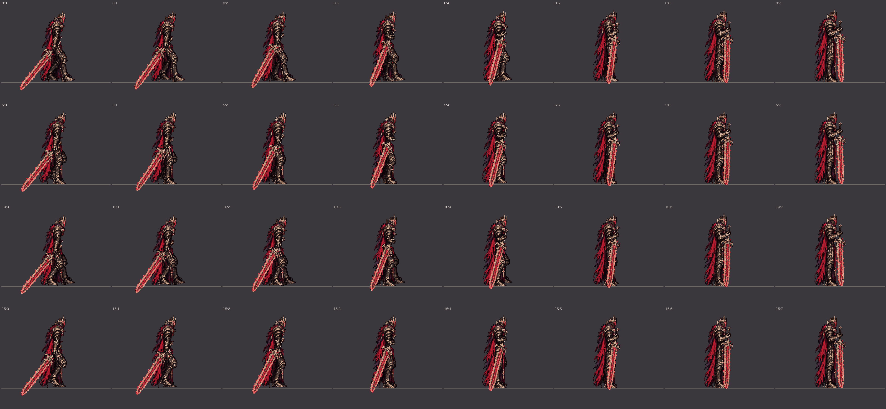
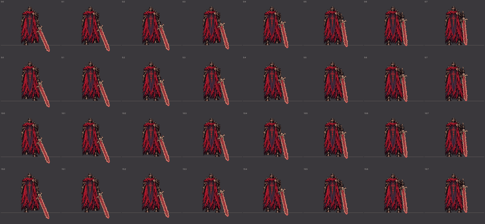
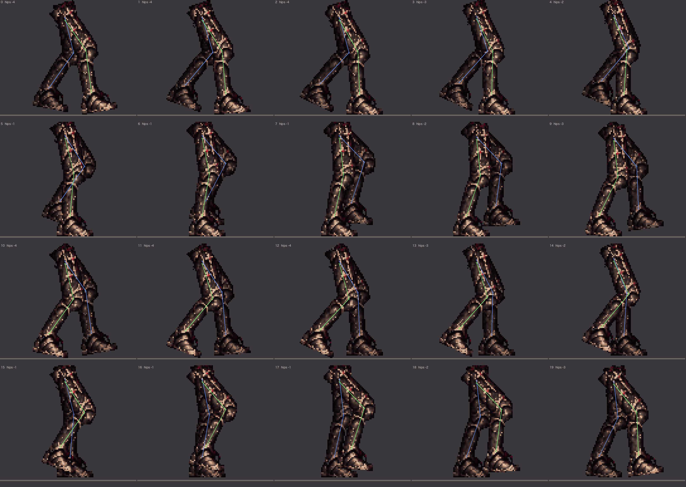